Що змінили після відгуку
Відгук на першу версію – і що з ним зроблено
Палітра
Нічний синій і латунь
Основу дає нічний синій – колір ночі, коли працює варта. Латунь – світло ліхтаря на посту: тьмяна, матова, без блиску і без градієнтів «під золото». На кожному носії латуні не більше 10–15 % площі – тоді вона не тягне в «люкс-ресторан» чи «ювелірку».
#0E1A2Bосновний: фон, знак, текст
#1F3350другий рівень, картки, авто
#C9A35Aлише акцент
#F4F1EAсвітлий фон, текст на темному
#7A5C26
#55657C
#A9B6C8
#34496A
#E4DCCB
Чотири основні кольори – ваш орієнтир без змін. Додано п'ять службових: для тексту, ліній і підкладок. Як палітра працює на речах – дивіться носії під кожним варіантом.
Контраст тексту (WCAG 2.1)
| Текст | Фон | Контраст | Де можна |
|---|---|---|---|
| Світлий | Нічний | 15,5 : 1 | будь-який текст |
| Світлий | Синій | 11,3 : 1 | будь-який текст |
| Латунь | Нічний | 7,4 : 1 | будь-який текст, AAA |
| Латунь | Синій | 5,4 : 1 | текст від 16 px |
| Нічний | Латунь | 7,4 : 1 | кнопки, напис на латуні |
| Туман | Нічний | 8,5 : 1 | другорядний текст на темному |
| Сталь | Світлий | 5,3 : 1 | другорядний текст на світлому |
| Латунь-текст | Світлий | 5,5 : 1 | посилання і акценти на світлому |
| Латунь | Світлий | 2,1 : 1 | ніколи для тексту – лише смуги, знак, плашки |
Шрифти
IBM Plex Sans + IBM Plex Mono
Охорона 24/7
Ґанок, їжак, ґудзик, «Є» і «Ї» – українська повністю.
Plex Sans – заголовки (600–700) і текст (400–500). Plex Mono – мітки, номери об'єктів, телефон, «24/7».
ОБ'ЄКТ № 0417 · ПОСТ 2 · 23:40
Чому саме вони
- Інженерний, рівний характер: схоже на службу, а не на рекламу. Mono додає «технічного» – це на перспективу пульта і систем безпеки.
- Одна родина на все: менше рішень, простіше в роботі – це прямо відповідає на «заскладно».
- Повна українська кирилиця (перевірено: Ґ, Є, І, Ї, Й, Щ, Ь, апостроф ʼ). Google Fonts, ліцензія OFL – безкоштовно для сайту, друку і авто.
- Не Fira Sans з першої версії і не Unbounded. Не заїжджена пара на кшталт Montserrat + Open Sans.
Розглянули і відкинули: IBM Plex Sans Condensed – у Google Fonts немає базової кирилиці; Golos і Onest – добрі шрифти, але Plex дає родину з Mono і нейтральніше походження.
Фундамент
«Ш» стоїть на латунній основі: охорона – це фундамент, на якому тримається спокій об'єкта.
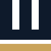
Розміри
Монохром
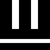
Тест негативного простору
- Що видно: два вертикальні прорізи згори і горизонтальна щілина над латунною смугою.
- Що прочитає новий глядач: «Ш» – одразу і однозначно: три стійки однакової висоти, спільна основа. На «Н» не схоже – немає середньої перекладини.
- Ризики: смугу можна прочитати як підкреслення («Ш_»). На 16 px щілина зникає – знак стає суцільною «Ш», це нормально. Середню стійку не можна робити вищою – вийде схоже на тризуб (державний символ).
- Слабке місце: найпростіший із трьох і з найслабшою історією – ближче до звичайної монограми.
Носії
під охороною
варта+380 67 549 5710
КПП
«Ш» під смугастою стрілою шлагбаума: на об'єкт заходять лише ті, кого пропустила варта.
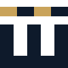
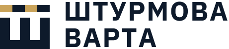
Розміри
Монохром
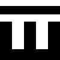
Тест негативного простору
- Що видно: «Ш» з двома прорізами, над нею – горизонтальна щілина і стріла в смужку латунь / синій.
- Що прочитає новий глядач: «Ш» під перекладиною; у кольорі смугаста стріла впізнається як шлагбаум. На «Н» не схоже: прорізи відкриті вгору, у щілину під стрілою, а перекладини посередині немає.
- Ризики: у монохромі стріла стає суцільною – лишається «Ш під дахом», шлагбаум вгадується слабше. Окремий стовпчик шлагбаума справа ми свідомо не додали – тоді знак читався б як «ШІ» (штучний інтелект).
- Плюс для стилю: смуга «латунь / синій» стає фірмовим елементом – борт авто, краї наліпок, розділювачі на сайті.
Носії
Світло у вікні
«В» – будівля на два поверхи, а в нижньому вікні горить світло: на об'єкті хтось чергує, поки інші сплять.
Розміри
Монохром
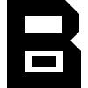
Тест негативного простору
- Що видно: два прямокутні «вікна»; у нижньому – світлий прямокутник у рамці.
- Що прочитає новий глядач: «В» (і латинське «B» – зручно, якщо буде англійська версія). Будинок із вікнами вгадується вже з ідеєю, але знак тримається і без неї.
- Ризики: на 16 px рамка навколо світла зливається – нижнє вікно стає суцільним, «В» лишається впізнаваною за силуетом. Можна сплутати з «8». Знаки-будинки з вікнами часто беруть забудовники – треба перевірити схожість у реєстрі знаків.
- Відкинули: квадрат із чотирма вікнами, одне світиться, – у негативному просторі виходить логотип Windows.
Носії
під охороною
варта+380 67 549 5710
Настрій
Ніч, світло на посту, порядок
Ілюстративні зображення, не фото об'єктів клієнта. Генерація зображень була недоступна (на рахунку сервісу немає кредитів), тому настрій показано плоскими SVG-ілюстраціями в палітрі. Для сайту потрібні справжні фото постів і об'єктів [уточнити].
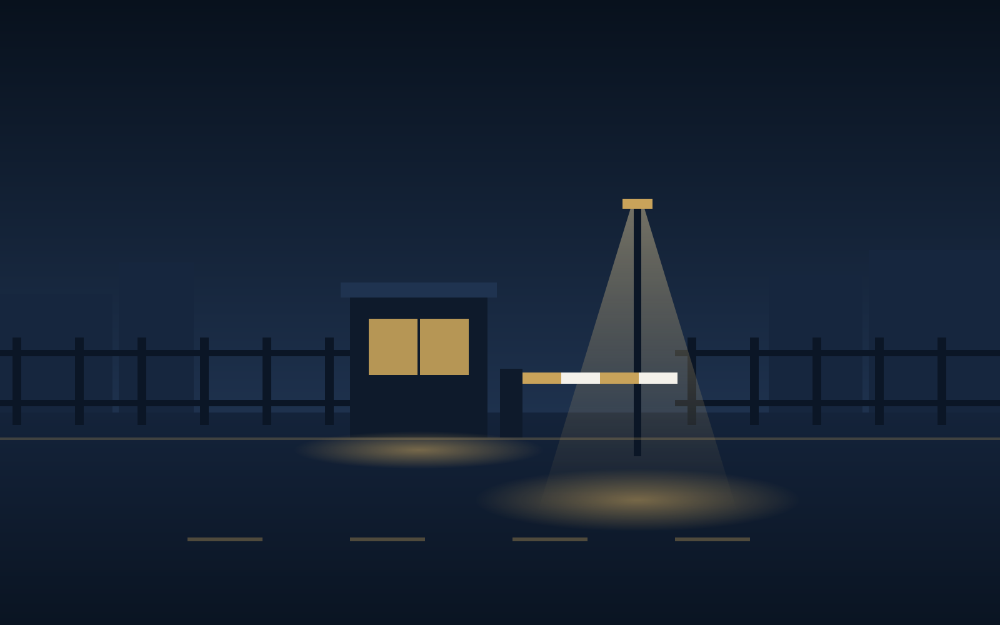
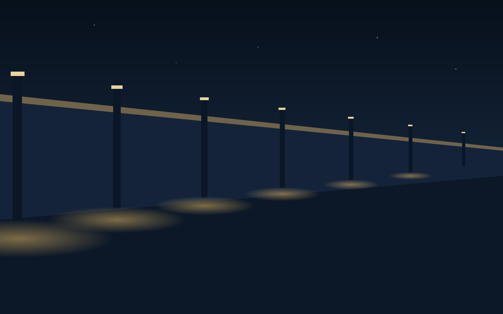
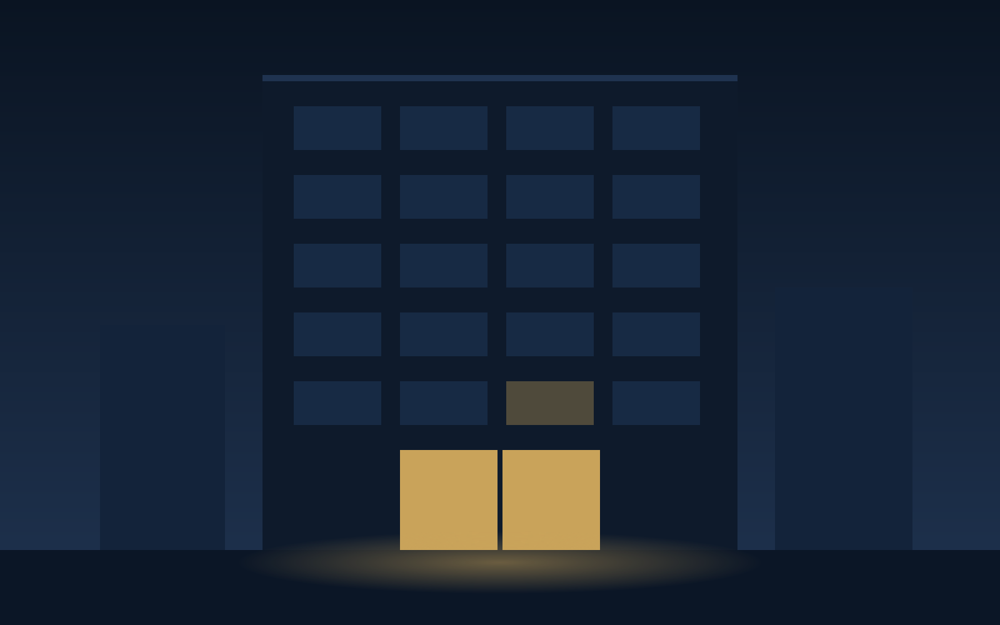
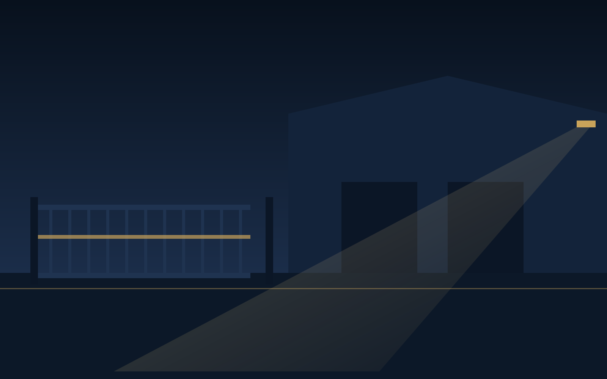
Порівняння
Три варіанти поруч
| Варіант | Ідея | 16 px | Монохром | Що дає стилю | Ризик |
|---|---|---|---|---|---|
| A · Фундамент | Ш на латунній основі | чітко «Ш» | добре | спокій, простота | найменш самобутній |
| B · КПП | Ш під шлагбаумом | «Ш» з перекладиною | добре, шлагбаум слабше | фірмова смуга латунь / синій | шлагбаум зрозумілий лише в кольорі |
| C · Світло у вікні | В-будівля з вогником | «В», вогник зливається | добре | тепла історія «ми чергуємо» | схожість на знаки забудовників |
Рекомендуємо B «КПП». Він про охорону без жодного кліше: не щит і не орел, а знайомий кожному контроль доступу. Знак читається як «Ш», а смуга «латунь / синій» дає фірмовий елемент, який легко впізнати на авто, наліпці й формі. Запасний – C: найтепліша історія, але потрібна перевірка на схожість.
Чого свідомо уникали
Щит, орел, лев, камуфляж, зброя, приціл, череп, блискавки, «металеве» золото з градієнтом. З першої версії – помаранч, скоси, три стійки з квадратом (читалися як «Н»), середня стійка вища за крайні (схоже на тризуб). Конкурентів у Києві (наприклад, Шериф, Сокіл, Аргус, Security Group, Force Solutions) знайшли в каталогах, але їхні логотипи наживо не переглядали [уточнити].
Що погодити
Питання до вас
- Який варіант знака беремо далі – A, B чи C? Можна «B, але з …» – напишіть, що змінити.
- Палітра: чотири основні кольори лишаємо як є? Латунь достатньо стримана чи хочеться ще тьмяніше?
- Шрифт IBM Plex Sans + Mono – подобається характер, чи хочеться м'якшого або суворішого?
- Написання: «ШТУРМОВА ВАРТА» великими літерами у два рядки – ок? Чи потрібен підпис «охоронна компанія» в самому логотипі?
- Носії для повного стилю: які точно потрібні – авто (яка модель?), форма, наліпки, вивіска, візитки, документи? [уточнити]
- Фото: чи є власні фото постів, об'єктів, авто, команди? Чи плануємо зйомку? Для сайту ілюстрацій мало.
- Схожість: перед фіналом перевіримо знак у реєстрі торговельних марок; назву «Варта» також використовують інші компанії – чи реєстрували ви вже знак для товарів і послуг? [уточнити]